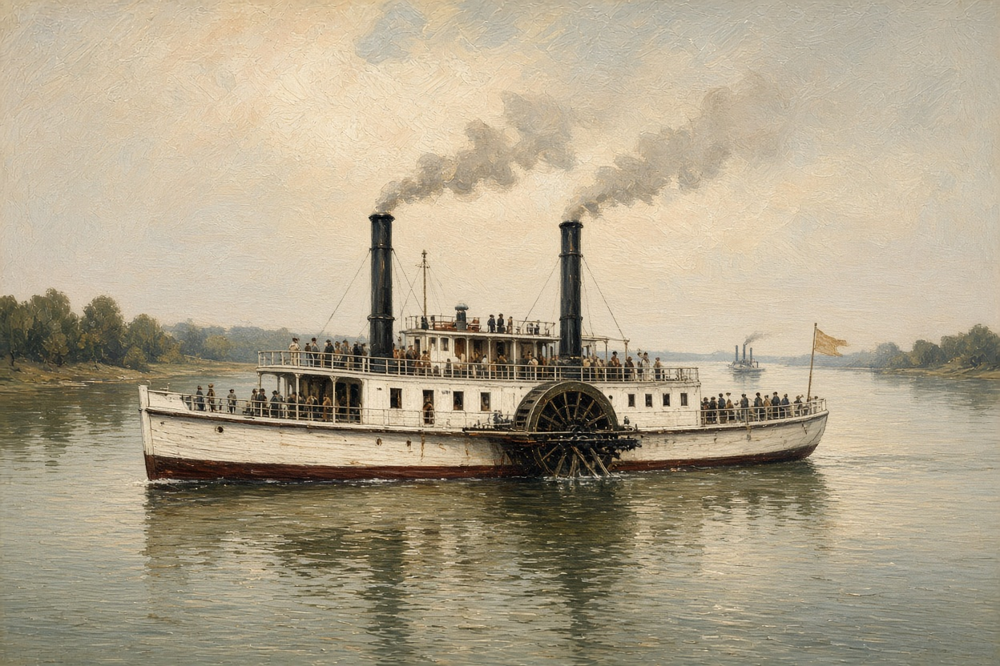
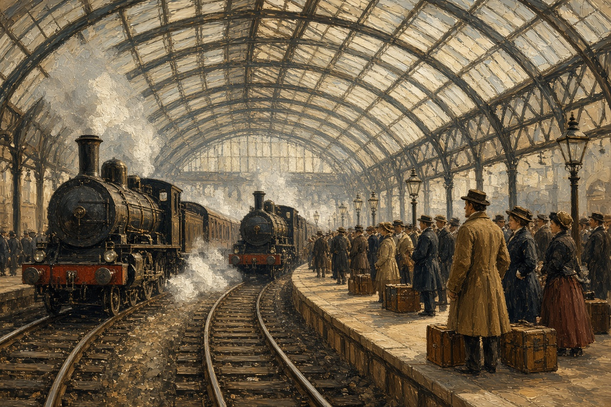

Steam and new fuels Steam machines and new fuels קיטור ודלקים חדשים מכונות הקיטור ודלקים חדשים
By the end of this page, name the new fuels that came after wood. By the end of this page, name the fuels that took the place of wood. בסוף העמוד תוכלו למנות את הדלקים החדשים שבאו אחרי העץ. בסוף העמוד תוכלו למנות את חומרי הדלק שתפסו את מקום העץ.
People built steam machines. Steam trains and steam ships went far and fast. Machines helped at home and at work. Factories made lots of clothes, food, and toys. Once people could build machines, they opened factories and used steam to move ships and trains. Journeys became longer and faster. Machines made hard work easier at home and at work, so factories could make large amounts of clothes, food, toys, and other goods. אנשים בנו מכונות קיטור. רכבות וספינות קיטור נסעו רחוק ומהר. המכונות עזרו בבית ובעבודה. בתי חרושת הכינו הרבה בגדים, אוכל וצעצועים. כשבני האדם כבר ידעו לבנות מכונות, קמו בתי חרושת, וקיטור הניע ספינות ורכבות. הנסיעה נעשתה רחוקה יותר ומהירה יותר. בבית ובמלאכה המכונות חסכו עבודה קשה, ואפשר היה להכין בגדים, מזון וצעצועים בכמויות גדולות.

The machines needed a huge amount of fuel. Wood and charcoal were not enough for so many machines. There was not enough wood. Each of those machines burned a great deal of fuel. Wood and charcoal, the fuels of that time, could not feed thousands of machines. Wood, which had been the main fuel, ran short. המכונות היו צריכות המון דלק. עץ ופחם-עץ לא הספיקו לכל כך הרבה מכונות. חסר עץ. אבל כל מכונה כזאת בלעה דלק רב. עץ ופחם-עץ, הדלקים של הימים ההם, לא יכלו להזין אלפי מכונות. העץ, שהיה הדלק העיקרי, אזל.
People began to use other fuels: coal, kerosene, and gas. Today wood is not the main fuel. So people turned to other fuels: coal, kerosene, and cooking gas. Today wood is no longer the main fuel. אנשים התחילו להשתמש גם בפחם, בנפט ובגז. היום העץ אינו הדלק העיקרי. לכן עברו לחומרי דלק אחרים: פחם, קרוסין (נפט) וגז בישול. בימינו העץ כבר אינו הדלק העיקרי.
